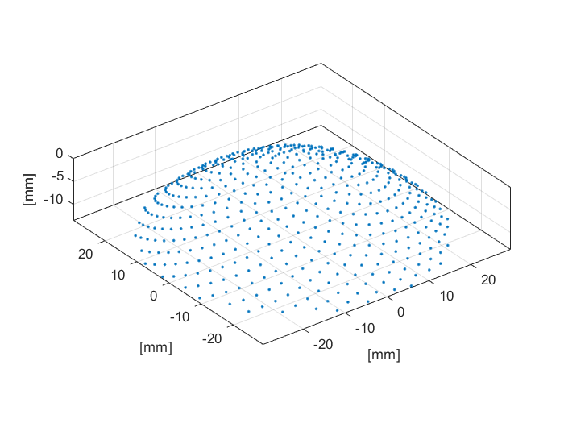

makeCartBowl
Create evenly distributed Cartesian points covering a bowl.
Syntax
bowl = makeCartBowl(bowl_pos, radius, diameter, focus_pos, num_points)
bowl = makeCartBowl(bowl_pos, radius, diameter, focus_pos, num_points, plot_bowl)
Description
makeCartBowl creates a 3 x num_points array of the Cartesian coordinates of points evenly distributed over the surface of a bowl. The bowl points are calculated using Fermat's spiral. The position of the bowl is set by bowl_pos, which corresponds to the center of the rear bowl surface. The orientation of the bowl is set by focus_pos, which corresponds to any point on the axis of the bowl (note, this must not be equal to bowl_pos). It is assumed that the solid angle of the bowl is equal to or less than 2*pi steradians. If the radius is set to inf, a disc is generated. The 3D plot that is displayed after calling makeCartBowl([0, 0, 0], 40e-3, 60e-3, [0, 0, -1], 500, true); is given below.

Inputs
bowl_pos |
Cartesian position of the centre of the rear surface of the bowl given as a three element vector [bx, by, bz] [m] |
radius |
Radius of curvature of the bowl [m] |
diameter |
Diameter of the opening of the bowl [m] |
focus_pos |
Any point on the beam axis of the bowl given as a three element vector [fx, fy, fz] [m] |
num_points |
Number of points on the bowl |
Optional Inputs
plot_bowl |
Boolean controlling whether the Cartesian coordinates are plotted (default = false) |
Outputs
points |
3 x num_points array of Cartesian coordinates |
See Also
makeBowl,
makeCartArc,
makeCartSphere,
makeCartSphericalSection,